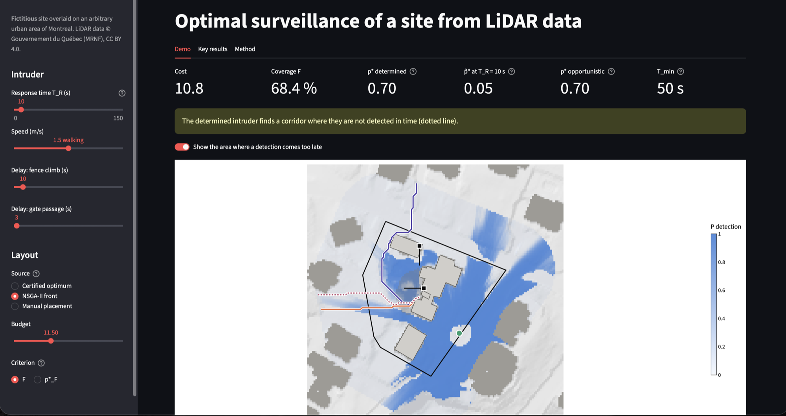
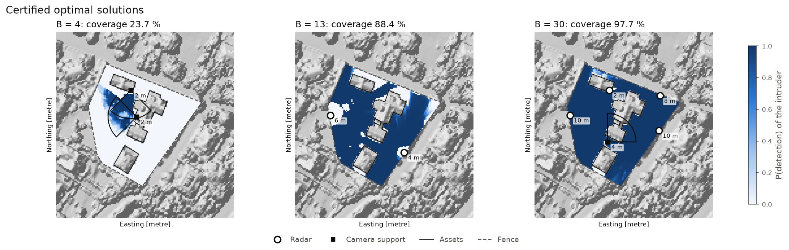
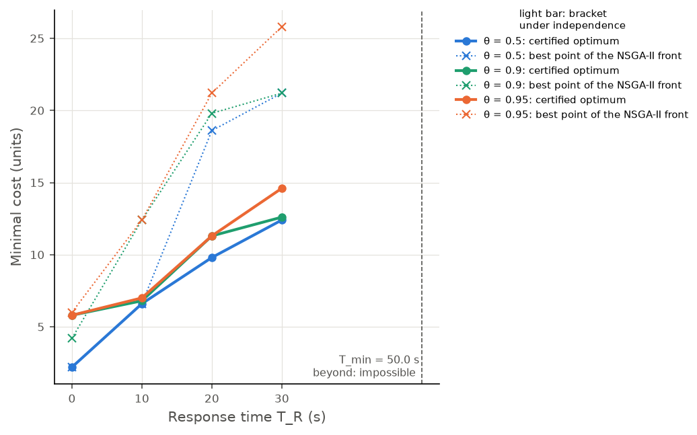
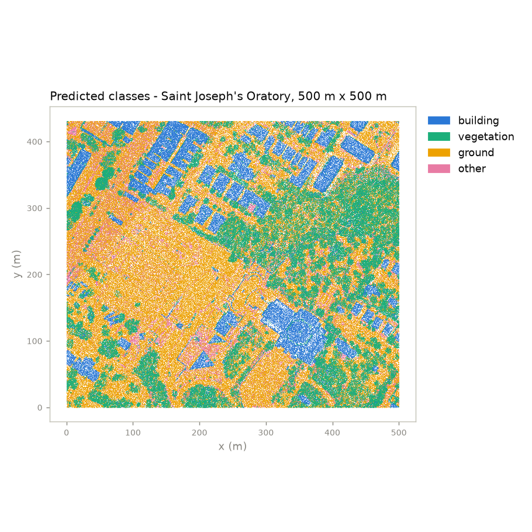
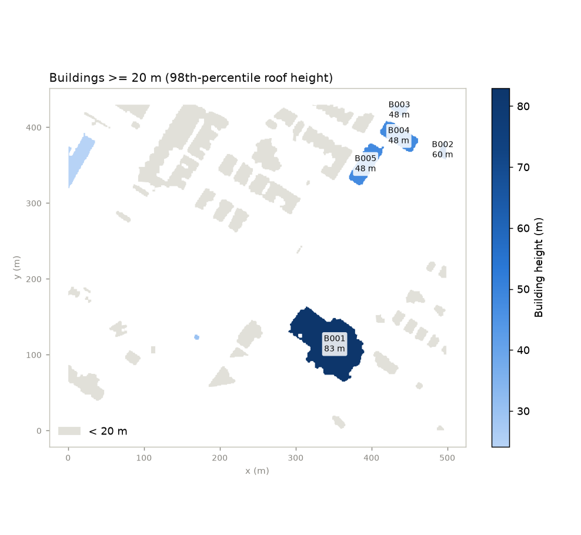
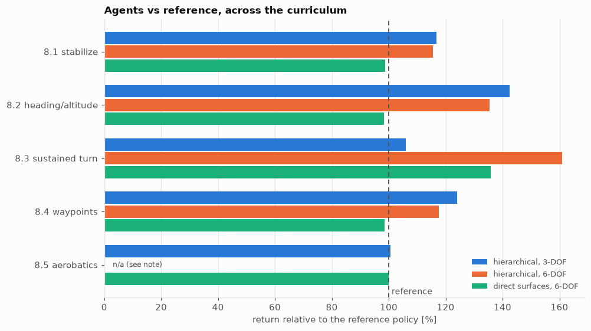
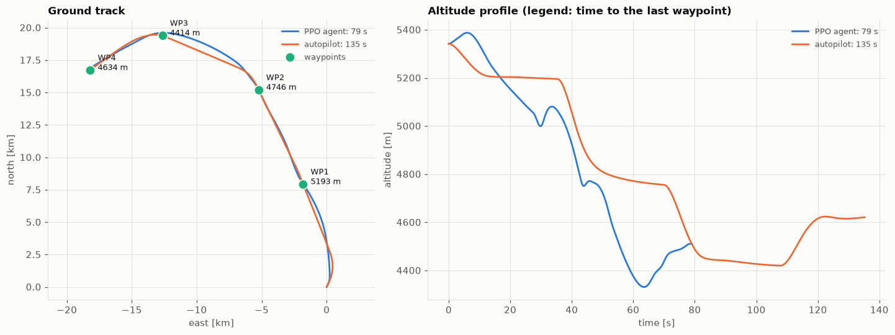
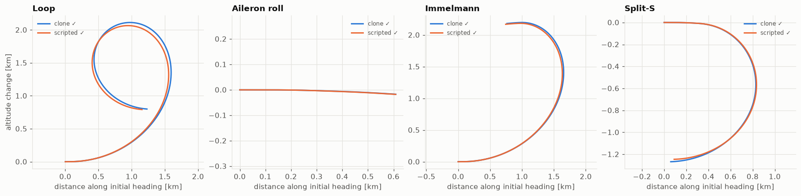

With a background in general engineering and data science, I solve real-world problems by collecting and then using data with artificial intelligence and relevant data technologies.
I develop integrated solutions that meet the needs of end users. The integration of agent-based artificial intelligence is currently one of my areas of interest.
Projects
Click a project to expand it.
In guarding and patrol services almost every contract is won through a public call
for tenders, yet bids were priced from memory while the market publishes nearly
everything needed to do better. For my MSc thesis at Polytechnique Montréal, with a
leading Québec security-services company, I designed, built and evaluated an
end-to-end decision-support tool: it finds the tender, reads its
100–200-page specification, retrieves comparable past contracts and recommends the
highest margin that still wins.
01 — How it works
Five modules around one shared database
Every module reads from or writes to a single store covering January 2015 to
March 2026. The modules are chained, so an extraction error propagates into the
recommended price; each one is therefore validated on its own.
01
Monitor
Scrape the Québec tendering system (SEAO) and link each new tender to its past versions with entity resolution, so renewals are spotted before they are announced.
02
Read
Hierarchical RAG and a local LLM turn the specification PDF into structured requirements (uniforms, equipment, vehicles), then into dollar scores.
03
Compare
A similarity score whose weights are learned from about 300 rankings made by a bid expert.
04
Price
Rank a grid of candidate margins instead of regressing one, so the model optimises what the business cares about.
05
Show
A Streamlit app for bid managers: opportunities, contract analysis, competitor profiles and the recommended margin.
The extraction pipeline (module 2). The document structure is kept when chunking, retrieval is sparse and domain-specific, and the LLM answers into a fixed JSON schema; a cost dictionary then turns the text into comparable numbers.
02 — Skills
LLM and RAG. Hierarchical retrieval over contract PDFs: PyMuPDF layout
parsing, section-aware chunking, BM25 with a security-domain vocabulary, and
schema-constrained JSON extraction by a local quantised LLM
(Ministral-3-14B), so confidential documents never leave the company.
Learning from human feedback. A small neural network trained with a RankNet
pairwise loss on expert rankings to learn what "comparable contract" means.
Learning to Rank. Pricing reframed as ranking candidate margins with
XGBRanker (pairwise objective, NDCG), which fits the asymmetric business loss and
small data better than regression.
NLP and entity resolution. spaCy matching against a cost dictionary;
Levenshtein and SequenceMatcher to link contracts written differently every time.
Data engineering and deployment. Selenium scraping, one shared database,
Streamlit, Docker on Azure (ADLS Gen2).
Applied research. Design Research Methodology, process redesign in BPMN with
the partner's bid managers, leak-free chronological evaluation.
03 — Results
87% precision / 98% recall for the RAG extraction, on 50 labelled contracts.
92% concordance when linking 60 tenders of 2025 to their past contracts.
40% win rate against 15% for the company's own pricing, and
3.52 M$ against 2.17 M$ of projected gains (+62%), in chronological
leave-one-out on 54 tenders.
On a second run of 57 tenders, ranked first on 59% and in the
top three on 83%.
Same win rate, twice the money. Regression wins as often as the ranking model, but minimising error pushes every bid down; ranking keeps the margin.
Monitoring. Ongoing tenders and upcoming renewals; one click opens the analysis.
Contract analysis. Past versions, similar contracts and the market view that ends on a recommended margin.
Published as E. Salaun, M. Belmouadden, R. Pellerin, A. Neumann,
C. Vasseur, "Leveraging artificial intelligence and strategic data for tender response
processes", CENTERIS 2026, Procedia Computer Science, Elsevier. Polytechnique
Montréal and CIRRELT, with Commissionnaires du Québec; funded by Mitacs. Results are
retrospective on a small dataset, and every recommendation is reviewed by an expert. The
contract data is confidential; figures are redrawn for this page.
With a limited budget, where should cameras and radars go to protect a site? The
textbook answer maximises coverage. This project shows that coverage is the wrong
objective and replaces it, in three steps, with the question a security engineer
actually asks: will an intruder who knows the layout be detected in
time? Everything runs on a 3D model built from the Québec government's
airborne LiDAR (the site itself is fictitious).
Question
Metric
What it can hide
Is the site covered?
weighted coverage
the worst case
Will the intruder be detected?
detection on the least watched corridor
a blind corridor behind high coverage
Detected in time?
only detections earlier than the response
nothing: this is the design metric
01 — How it works
3D model
LiDAR tiles (30 points/m²) are streamed into terrain, building and canopy rasters. Buildings are opaque; trees are semi-transparent, with a transparency measured from the LiDAR itself.
visibility
An exact ray-tracing engine (numba) computes what each candidate position sees, then camera and radar detection laws give a detection matrix for 2,290 sensor configurations.
optimise
A greedy baseline, a MILP with cuts generated on demand that certifies how far from optimal each layout is, and NSGA-II for the cost / coverage / robustness trade-off.
adversary
An intruder finds the weakest corridor; each corridor becomes a new constraint for the optimiser, until no corridor remains and the layout is proven optimal.

Three metrics, one layout, three verdicts. 68% coverage and 0.70 detection on the worst corridor, yet only 0.05 chance of detecting the intruder in time with a 10 s response.
02 — Skills
3D point-cloud processing. Classified LiDAR turned into terrain, building
and vegetation rasters at constant memory (PDAL, laspy, rasterio), checked against
PDAL and the official terrain model.
High-performance geometry. Exact ray traversal in a numba kernel, checked
against gdal_viewshed; an exact referee caught 1% of cells wrongly
marked visible by the first, sampled version.
Optimisation. Submodular coverage solved by greedy and by a MILP (HiGHS)
with lazily generated cuts, giving certified bounds; multi-objective search with
NSGA-II (pymoo).
Adversarial modelling. A worst-corridor metric computed exactly by
percolation (union-find), inside a master / oracle loop that converges with a
certificate.
Deep learning, used only where it is faster. A planned U-Net was
benchmarked and dropped where the exact engine was already faster; a PyTorch
surrogate was kept for whole-area visibility, with exact symmetry augmentation.
Decision analysis. Sensitivity measured as decision regret (summer
foliage, a running intruder), with the protocol fixed before computing anything.
03 — Results
The greedy heuristic loses up to 15.9 coverage points at one budget, a
loss that is visible only against the certified bound (optimum proven within 0.5% on
most budgets).
For a timely detection with a 10 s response, the certified layout costs
6.8 units against 12.4 for the best layout found by NSGA-II, which does not
optimise timing.
The fastest intrusion takes 50 s: with a slower response, no number of
sensors helps, only physical delay (fence, gates) does.

Certified optimal layouts. Cameras at small budgets, then radars, with a camera covering the radars' shadow.

The price of a timely detection. Certified optima (solid) against the best NSGA-II point meeting the same requirement (dotted).
"Which buildings around Saint Joseph's Oratory are taller than 20 m?" Answering that
from airborne LiDAR takes a chain of GIS and machine-learning steps on 127 million
points. This project puts an LLM agent in front of that chain with one rule:
the LLM plans and explains, it never computes. Every number comes
from a deterministic tool, and a validator checks each result before the LLM sees
it.
01 — How it works
Three nodes, seven tools, one validator
The agent is a LangGraph state machine. The agent node is a single
Claude API call that picks the next tool; tools runs typed Python
functions; validator applies physical and geometric rules (no LLM) and
sends errors back with likely causes and a suggested fix, with at most two retries.
Tools exchange file paths, so every intermediate result is cached and can be opened in
QGIS: a follow-up question reuses the earlier files instead of starting over.
The tools, in the order of the standard plan.
Tool
Returns
find_lidar_tiles
tile extents and density
load_point_cloud
the requested area, cropped from the tiles
normalize_height
height above ground and a terrain model
classify_lidar_points
a class for every point
extract_buildings
footprints with heights and areas (GeoJSON)
filter_buildings
buildings within a height range
create_map
an interactive map
A question and its follow-up (scroll inside the frame), with the live trace of every tool call. The follow-up takes 3 steps instead of 7 because it reuses the first answer's buildings file.
02 — Skills
LLM agents and tool use. Claude function calling orchestrated by LangGraph;
an 80-line decorator turns type hints into JSON schemas and validates arguments with
pydantic.
Guardrails. A rule-based validator between the tools and the LLM, which
checks every building in a result and not only the ones the LLM sees, plus an offline
planner when no API key is available.
Machine learning on 3D data. A Random Forest point classifier with
geometric features (linearity, planarity, scattering, verticality) from local
covariance; spatially held-out evaluation, so test points never neighbour training
points.
GIS. Terrain normalisation, raster morphology and vectorised footprints
with GeoPandas and rasterio; Folium maps and a 3D view in Streamlit.
Testing LLM systems. 25 tests run without an API key: scripted fake LLMs
drive the real graph, tools and validator.
03 — Results
0.914 building F1 (0.880 without the geometric features), 0.929 accuracy,
on 480,000 held-out points.
Buildings found from the predicted classes against the vendor's professional
classification: 36 / 36 matched, 0.04 m median height difference,
footprint IoU 0.944.
About 35 s from raw tiles to a map for a 500 m × 500 m area, on a laptop.

Predicted classes around the Oratory. Roofs, canopy and open
ground come out as coherent patches.

Buildings of at least 20 m around the Oratory. The basilica (B001)
has an 83 m roof height and a highest point at 106 m.
Personal project. Known limits: adjoining buildings merge into one
footprint, vegetation training labels are derived by rule, and the validator's 150 m
limit must be raised for downtown Montreal.
Québec publishes every public tender, bid and award as open data, but as
multi-gigabyte nested JSON that cannot answer a simple question. This project turns that
feed into a query-ready SQLite database and exposes it to Claude or ChatGPT through a
read-only MCP server. The point is not to
give the model SQL access, which a generic server already does, but to give it
the correct SQL, built into tools, for the questions where the
obvious query returns a plausible but wrong number.
01 — How it works
Three build scripts, one server, nine tools
Three idempotent scripts download, filter and normalise the feed into 18 tables
and 5 views, with an accent-insensitive full-text index and a data dictionary stored
in the database itself. A FastMCP server then offers six curated analytical tools for
the questions worth getting right, and three flexible ones
(describe_schema, search_processes, run_sql)
for everything else.
Nine tools, one door. Every question goes either to a curated tool or to the flexible core, through the same read-only connection.
Three traps that a model writing its own SQL falls into, and that the tools handle for it.
Trap
What goes wrong
How the tools handle it
Supplier identity
One firm, many spellings: Garda alone is 9 legal entities under 6 names
Names are resolved to all their enterprise numbers before aggregating
Win and loss
Not stored; counting bid rows double-counts lots
Derived from award membership, counted per tender
Direct awards
No bids at all, so a firm handed 3 contracts scores 100%
Excluded from win rates, always reported alongside
02 — Skills
Tool design for LLMs (MCP). Tools designed backwards from analysts'
questions; they return short reports in the analyst's vocabulary rather than raw
rows, and the server's handshake instructions give the model the data rules before
its first call.
LLM guardrails.run_sql is read-only by construction rather
than by instruction: a read-only database connection, a single SELECT statement
with a blocklist of write commands, a 2,000-row cap and a 5-second timeout.
Data modelling. Nested Open Contracting (OCDS) releases normalised into
a relational schema, with entity resolution of suppliers.
Data engineering. An incremental download, a filter that can be retargeted
to another sector in two lists, a normaliser using only the standard library.
03 — Results
A plain-language question such as "Garda's win rate on open tenders?" becomes one
tool call. The server works in Claude Code and Claude Desktop, and in ChatGPT through
a proxy. A smoke test calls all nine tools with the README's example questions,
including a DELETE that has to be refused. Below, a three-word prompt
produces a full competitor analysis in which every number comes from a tool call.
"Analyse charco industries" (scroll inside the frame): key figures, contract history, win rate by year and most frequent rivals, then Claude's reading of them.
Open-source tool, MIT licence. Data: Québec SEAO open data (OCDS) via
open.canada.ca, security services only; coverage skews to 2021–2025, so figures are
indicative.
Can an agent that learns by trial and error fly a fighter jet as well as a
hand-tuned autopilot? An agent trained on wrong physics learns to exploit the bugs, so
the project is split in two: jetfighter-sim,
an F-16 flight simulator written from the physics up and validated against published
data, and jetfighter-rl,
which turns it into a reinforcement-learning environment and trains agents on a
curriculum of manoeuvres, each judged against the classical autopilot.
01 — How it works
A curriculum, from easy to realistic
The agent first flies through the fly-by-wire (it commands g, roll rate and
throttle) on a fast simplified aircraft, then on the full rigid-body model, and
finally moves the control surfaces itself. Each task defines its own observations,
reward terms and success criterion.
Task
Success criterion
Recover wings-level from an unusual attitude
level within 10 s
Reach a heading, altitude and speed
within 30 m / 3° / 5 m/s, limited overshoot
Turn at the best sustainable rate
≥ 90% of optimal, no energy loss
Fly through 4 random 3D waypoints
all 4 captured
Loop, roll, Immelmann, Split-S
figure completed, right exit heading
02 — Skills
Reinforcement learning. PPO (Stable-Baselines3, PyTorch) on a custom
Gymnasium environment, with curriculum learning and reward shaping from named,
separately logged terms.
Imitation learning. Behaviour cloning with DART noise and a critic
warm-up, needed where pure RL never finds a 20-second manoeuvre such as a loop.
Transfer learning. Policies trained on the simplified aircraft are copied
into the full model and fine-tuned (20% → 100% success).
Environment design. Observations without discontinuities (gravity
direction instead of Euler angles), a neutral action that holds the flight path, and
three clocks per step (100 Hz physics, 50 Hz fly-by-wire, 10 Hz agent).
Simulation and control. 6-DOF rigid body on NASA wind-tunnel data,
quaternions and RK4, gain-scheduled fly-by-wire, cascaded autopilot, LQR; 596
tests against analytic solutions and published F-16 figures.
03 — Results
Through the fly-by-wire, agents match or beat the autopilot on all 5 tasks,
by up to 61% in return, with 90–100% success; a 4-waypoint course is flown in
79 s against 135 s.
Aerobatics learned by imitation then PPO: 100% success, slightly better
than the scripted pilot it learned from.
Without the fly-by-wire, moving the raw control surfaces: 90–100% success with
no envelope violation, at 72–84% of the fly-by-wire agents' return.

Return relative to the reference, one seed per agent. 100% means
matching the autopilot or scripted pilot on the same evaluation episodes. The 6-DOF
hierarchical aerobatics agent was trained before a reward hack was fixed and is left out.

Same course, same aircraft. The agent anticipates each turn and
trades altitude freely; the autopilot flies to one waypoint at a time.

A network that was never rewarded, flying aerobatics. Loop, roll,
Immelmann and Split-S by the cloned policy against the scripted pilot it learned from.
Five reward hacks, none visible on the learning curves
Replaying the flights showed agents turning 2.5× faster than the optimum in a
descending spiral that lost 3 km, faking a loop with a 6-second wiggle, or crashing
early to stop paying costs. Each was closed by a reward fix, which is why the flights
were checked visually, not only on the metrics.
Personal project. Results are the best evaluated model of each
experiment on a single seed; more seeds are the obvious next step.
A series of 18 notebooks that builds a single Python risk toolkit, from measuring
returns to dynamic allocation. It starts with Markowitz optimisation and shows why it
is fragile, then moves to the question an investor with a future liability actually
faces: how to take market risk while guaranteeing a floor. Every
strategy is tested on 5,000 simulated scenarios and on 28 years of US market data.
0%floor breaches for the floor allocator, against 3.6% for 100% equities
−22%max drawdown of the constrained strategy, against −50% for the market, 1990–2018
0.55Sharpe ratio, against 0.46 for the market over the same period
01 — How it works
One allocation engine, several definitions of the floor
Strategies are written as allocator functions plugged into a backtester that knows
nothing about them. The core engine is CPPI: at each step, invest a multiple of the
cushion above the floor in the risky asset and the rest in the safe asset, so
exposure falls to zero before the floor is reached.
One engine, three definitions of the floor. The three dynamic functions share this exact loop and differ only in the line that updates F, which is what makes the jump from classic CPPI to liability-driven allocation nearly free.
02 — Skills
Numerical optimisation. Efficient frontier, max-Sharpe and minimum-variance
portfolios with SciPy SLSQP under constraints, and a demonstration of how a 1-point
error in expected returns sends the optimiser to a corner.
Monte Carlo and stochastic processes. Vectorised geometric Brownian
motion for equities and a CIR model for interest rates with analytic bond prices;
spotted a ~2% bias in a naive discretisation.
Risk measurement. Historic, Gaussian and Cornish-Fisher VaR, CVaR,
drawdown, skewness and kurtosis.
Backtesting design. Strategies judged on their full distribution
(probability and size of a shortfall), not on the average outcome.
03 — Results
The floor allocator eliminates every breach while giving up 0.03 of mean
terminal wealth; a 70/30 fixed mix gives up 0.21 and still breaches on 0.8% of
paths.
Raising leverage from 3 to 10 gains 0.02 of expected wealth and breaks the
guarantee on 2.8% of paths: gap risk.
On real data, the drawdown-constrained strategy halves the worst loss
and improves the Sharpe ratio, at a cost of 2.2 points of annual return.
5,000 scenarios, 10 years, binned terminal wealth. The fixed mix buys safety by cutting off both tails. The floor allocator does something else entirely: it stacks the failures into a spike just above 0.75 and leaves the right tail alone, its 95th percentile and its maximum are the same as pure equities'.
At a 3,000-guest student gala, bar stock was tracked with tally marks and guesswork.
I designed and deployed a connected system: an ESP32 button pad at every bar records
each sale, the data reaches a shared Google Sheet in real time over 4G, and a
lightweight forecast warns about 30 minutes before a bar runs out,
which is the time a runner needs to restock it.
01 — How it works
A button press is timestamped and queued on the device, then published over MQTT
through a private 4G router, independent of the venue's wifi. A bridge appends one row
per sale to the Google Sheet, removing duplicates by sequence number, and the
forecast reads the same sheet.
One loop, closed at the storeroom. The left column is the only part
that lives in the venue; everything to the right of the 4G uplink is off site, which is
what makes the sheet survive a bar losing power or a device being unplugged mid-evening.
02 — Skills
Embedded and IoT. ESP32 firmware in C++, a button matrix, and a local
queue so the bartender never waits for the network.
Reliable messaging. MQTT over 4G with sequence numbers, so a device can
resend freely after a reconnection without inflating sales.
Real-time forecasting. Last year's consumption profile, adjusted for the
moment of the night and the bar's location, re-anchored on live sales; the alert
fires when the projected time to empty reaches the restocking time.
User-centred design. A Google Sheet as the dashboard, because the whole
team already had it on their phones.
03 — Results
Used for one night across several bars and 3,000 guests, with stock-out warnings
about 30 minutes ahead. The night ends with a per-second record of what was sold
where, which is what next year's forecast is fitted on.
One bar, one night, reconstructed for this page. The dashed curve is
the prior, the solid one is what the presses actually say, and the alert is not raised
when the stock is low but when the projected time to empty falls to the runner's round
trip.
Built for a student gala, 2023. The firmware, bridge and forecasting
sheet were written for the event and are not public; figures are redrawn from the
evening's logs.
A semester project for the CNES PERSEUS programme at Arts et Métiers: a rocket nose
cone wound from flax fibre on a four-axis winding machine. A fibre laid along the wrong
path slides down the cone before the resin cures, which is what the first trials
showed. My part was the mathematical and software chain: model the fibre path,
simulate the whole winding and generate the machine program.
3.99measured convergence order of the RK4 solver (4 expected)
26.2708 mmpolar opening found by the solver, against 26.271 mm in closed form
×9.710,597 path points compressed to 1,095 G-code blocks within 0.05 mm
01 — How it works
The fibre path is the solution of a three-equation ODE built from the surface
geometry and one friction parameter. Everything downstream (pattern, coverage,
machine axes, timing, G-code) is computed from that one trajectory.
One model, two consumers. Everything above the fold is geometry and
the ODE; everything below it is bookkeeping on the solution. The coverage branch and
the machine branch read the same trajectory, which is why a coverage requirement can be
turned directly into a pattern and a cycle time.
02 — Skills
Mathematical modelling. Differential geometry of the mandrel and a
no-slip criterion that says when friction can hold a fibre in place.
Scientific computing. RK4 integration in arc length, which removes the
singularity of the textbook formulation at the turnaround; turnarounds located by
bisection; a conserved quantity used as a free error check.
Algorithm design. The pattern algebra that explains why one extra circuit
can nearly double the fibre used, and a G-code compression by exponential and binary
search.
Robotics and CNC. Four-axis inverse kinematics, speed planning within the
axis limits, and G-code generation for the real machine.
03 — Results
Explained the slippage and fibre build-up seen in the trials: at the small end,
the path required more friction than was available.
A design recipe for a closed layer, 30 circuits with pattern number 7,
predicted from the algebra, then confirmed by a simulation it had never seen
(coverage 1.016 for a target of 1).
A machine program that accounts for the offset of the fibre-delivery eye, which
would otherwise misplace the spindle by up to 20.9°.
The bare mandrel. The turned nose cone profile, mounted between
chucks on the XWinder before any fibre is laid.
After a few passes. The crossings of the flax tow are the band
pattern the algebra of section 09 predicts, laid on the real surface.
Twelve circuits, laid without stopping. 10.50 m of tow in 1.4 min.
The carriage, the delivery eye and the free length of tow between them are simulated
with the path, since the eye lead is what the inverse kinematics has to solve for.
Semester project for the CNES/PERSEUS programme, ASTREOS demonstrator,
at Arts et Métiers. The project report also covers the flax/Elium materials, the machine
and the experimental campaign; this page covers the mathematical and software parts.
Education
2024 — 2026
MSc
Polytechnique Montréal · Montréal
Thesis: Tender response process : levaraging contractual and concurrential data
GPA: 4.0/4.0, Award of Excellence, Conference Article @ Centeris2026 Procedia Computer Science
2022 — 2026
Engineering Diploma
Arts et Métiers ParisTech · Paris
Top french engineering school with a strong focus on mechanical and industrial engineering.
Top 10% student, Alumni Scholarship Recipient
2020 — 2022
Preparatory Classes PTSI/PT*
Lycée Livet · Angers
Two years of intensive studies in mathematics and physics to prepare for the french top engineering schools entrance exams.
![One-page summary of the thesis: the five modules — monitor the SEAO feed, read the documents with hierarchical RAG, compare contracts with a RankNet ranking, price with an XGBRanker, show the result in Streamlit — all writing to and reading from one shared database covering January 2015 to March 2026; beside them, the chronological leave-one-out win rate of 40% against 15% for the reference, and projected gains of 3.52 M$ against 2.17 M$, with the headline figures of 1,960 publications, 94% carrying award data and 87 / 98% extraction precision and recall.](assets/img/MSc/resume_tender-response-process.svg)


![One-page summary of the repository: on the left the efficient frontier computed with long-only SLSQP, with the single assets, the global minimum variance and maximum Sharpe ratio portfolios marked; on the right the CPPI wealth paths over a ten-year horizon at a multiplier of three, with the simulated paths, their median and the floor; below, the three layers of the library — loaders returning monthly PeriodIndex returns, engines for optimisation, risk measures and GBM and CIR simulation, and backtests running CPPI and allocator mixes against three floor definitions.](assets/img/PortfolioFi/resume_portfolio-optimization.svg)
![One-page summary of the system: ESP32 button-grid terminals with local debounce publish each sale over a 4G uplink with MQTT QoS 1 to a broker on a private access point, independent of the venue wifi; a bridge deduplicates by device and sequence number and appends rows to a Google Sheet, which feeds a restock board alerting per bar and item; beside it, the stockout forecast built from last year's baseline, a night-segment multiplier and a location weight, and a chart of units remaining for one bar over one night, with the alert raised about thirty minutes before depletion.](assets/img/CashRegister/resume_connected-cash-register.svg)
![One-page summary of the study: the tangent-ogive mandrel profile with its 26.27 mm polar opening and the Clairaut relation, a starting angle of 25 degrees and a friction parameter lambda; the three-state ordinary differential equation in z, theta and alpha parametrised by arc length, integrated by a fourth-order Runge-Kutta scheme at half-millimetre steps with convergence order 3.98 to 3.99 and turnarounds located by bisection; and the five stages of the chain — geometry, integration, pattern closure, four-axis kinematics and adaptively decimated G-code.](assets/img/Perseus/resume_filament-winding-nose-cone.svg)